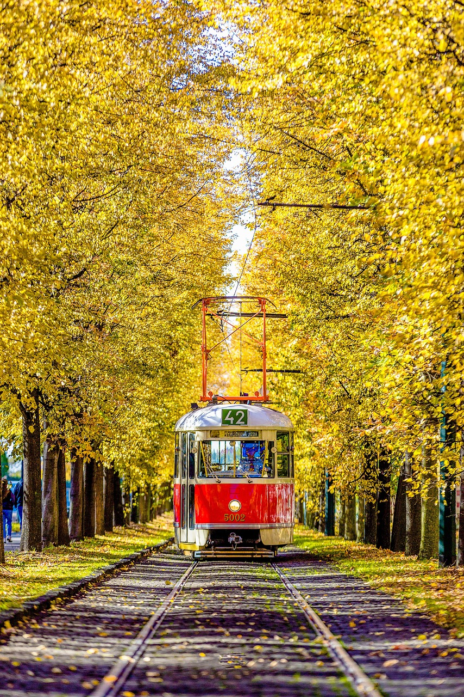

Wie man reisen kann – Kurzstrecken
Auch kurze Wege können spannend sein – ob zur Arbeit, in die Schule oder zum nächsten Ausflugsziel.
Was ist eine Kurzstrecke?
Von Kurzstrecken spricht man, wenn das Reiseziel relativ nahe liegt – meist innerhalb derselben Stadt oder Region, also bis etwa 50 Kilometer. Diese Wege sind oft Teil unseres Alltags: der Schulweg, der Arbeitsweg oder der Besuch von Freunden im Nachbarort.

Möglichkeiten für Kurzstrecken
Für kurze Strecken stehen uns viele verschiedene Verkehrsmittel zur Verfügung. Welche Wahl am besten ist, hängt von Zeit, Wetter und persönlichen Vorlieben ab: